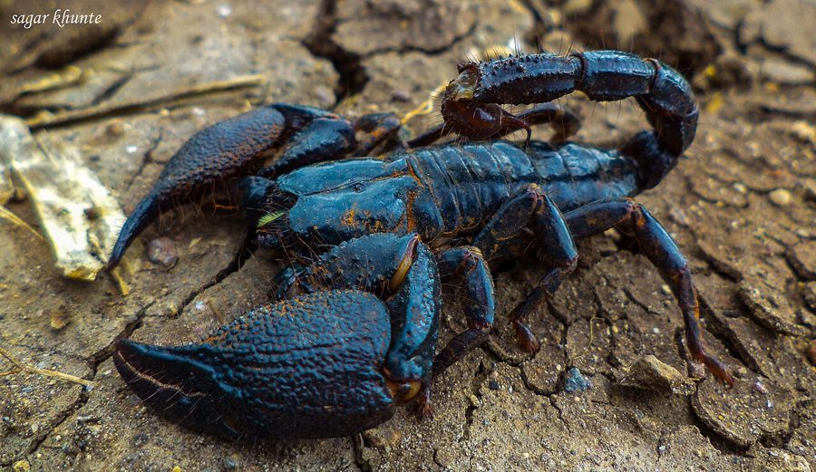

बंगाल जंगली बिच्छूBengal Forest Scorpion
Deccanometrus bengalensis · Scorpionidae · SPD-0052

- Scientific name वैज्ञानिक नाम
- Deccanometrus bengalensis (C.L.Koch, 1841)
- Family कुल
- Scorpionidae
- Hindi हिंदी
- बंगाल जंगली बिच्छू
- Local names स्थानीय नाम
- bengal forest scorpion, indian black scorpion, jangli bichhu
- Status here यहाँ की स्थिति
- native
- Movement आवागमन
- Resident, here all year
- Known from कहाँ दर्ज
- Others have published records from the wider Awadh–Purvanchal plain, none yet from Basti–Ayodhya अवध–पूर्वांचल से दूसरों के प्रकाशित अभिलेख, बस्ती–अयोध्या से अभी नहीं
- IUCN IUCN
- not evaluated
- Review समीक्षा
- not yet reviewed
When to look कब देखें
Present all year. साल भर मौजूद।
Tell it apart from इनसे अलग पहचानें
बंगाल जंगली बिच्छू / Bengal Forest Scorpion
Deccanometrus bengalensis (C.L.Koch, 1841) — Scorpionidae
बंगाल जंगली बिच्छू — जंगलों, बीहड़ों और बगीचों में पत्थरों के नीचे मांद बनाकर रहने वाला एक विशाल काला बिच्छू, जिसके पंजे (चीला) बहुत बड़े और शक्तिशाली होते हैं तथा जिसकी पूंछ अपेक्षाकृत पतली होती है।
Quick Identification त्वरित पहचान
| Feature | Description |
|---|---|
| Size & Color | Large, robust, heavily built scorpion, glossy dark blackish-brown to deep pitch-black |
| Pincers (Chelae) | Massive, broad, heavy pedipalp claws with coarsely granulated and lobed manus |
| Tail (Metasoma) | Relatively slender, segmented tail ending in a curved venomous aculeus with reddish telson |
| Pectines | Sensory comb-like organs beneath the mesosoma bearing 12 to 16 teeth |
| Burrowing habit | Fossorial; excavates deep horizontal burrows under boulders, tree roots, and timber |
Large, heavily armored black forest scorpion unmistakable by its massive, powerful pedipalp claws (chelae) and dark pitch-black or blackish-brown body. The pincers are large and rough, the hand narrow and its upper surface reticulated with ridges and low tubercles (Pocock 1900). The tail (metasoma) is relatively slender compared to the enormous chelae, ending in a reddish-brown bulb (telson) with a sharp curved sting. Unlike the venomous Indian red scorpion, its sting produces localized pain but is not life-threatening.
हिंदी: बड़ा और भारी काला बिच्छू जिसके दोनों पंजे (चीला) बहुत चौड़े और मजबूत होते हैं। यह पत्थरों और जड़ों के नीचे बिल बनाकर रहता है। इसका डंक दर्दनाक होता है लेकिन लाल बिच्छू की तरह जानलेवा नहीं।
Morphology शारीरिक संरचना
| Feature | Description | Source |
|---|---|---|
| Total length (adult) | 103 mm (a female and a male from Satna) | Pocock (1900) |
| Chela morphology | Hand narrow, its width not much exceeding the underhand; upper surface with a reticulation of ridges and low tubercles | Pocock (1900) |
| Pectinal teeth count | Up to 16 in the male, as few as 12 in the female | Pocock (1900) |
| Metasoma structure | Segments slender, finely carinated, ending in a curved aculeus with reddish telson | Pocock (1900) |
The adult body is large, robust, and heavily sclerotized, with a total length of 103 mm in both the female and the male that Pocock (1900) measured. The carapace is smooth on the central disc with granulated lateral margins, carrying a pair of median eyes on a central tubercle and three pairs of lateral eyes. Coloration is uniform dark blackish-brown to pitch-black, often with a dull greenish or reddish luster under bright light. The chelae (pincers) are large; the hand is narrow, its width not much exceeding the underhand, and its upper surface is covered with a reticulation of ridges and low tubercles (Pocock 1900). The walking legs are dark brown and relatively short. The metasoma (tail) is moderately slender, with smooth or finely keeled segments; the telson is reddish-brown, ending in a sharp, curved dark aculeus. The pectines on the venter bear 12 to 16 teeth (Pocock 1900).
हिंदी: Pocock (1900) के मापे गए नर और मादा, दोनों की कुल लंबाई 103 मिमी थी। शरीर का रंग गहरा चमकदार काला होता है। इसके दोनों पंजे बहुत मोटे, चौड़े और दानेदार होते हैं।
Behaviour & Ecology व्यवहार एवं पारिस्थितिकी
A strictly nocturnal, fossorial burrower that inhabits undisturbed woodland soils and rocky ravine terraces. It uses its powerful chelae and walking legs to excavate deep, sloping burrows under large flat boulders, termite mounds, rotting tree stumps, and canal embankments. During the day, it rests inside the humid darkness of its burrow, maintaining body hydration. At night, particularly during warm and humid monsoon weather, it waits at the burrow entrance with its pincers extended outwards to ambush passing prey, occasionally wandering short distances over the ground.
हिंदी: यह पूरी तरह से रात में सक्रिय रहने वाला जीव है जो दिन में पत्थरों या दीमक के टीलों के नीचे अपने गहरे बिल में रहता है। रात में, विशेष रूप से बारिश के मौसम में, यह बिल के मुहाने पर पंजे फैलाकर शिकार का इंतजार करता है।
Life Cycle / Phenology जीवन चक्र एवं फेनोलॉजी
Viviparous arachnid displaying remarkable maternal care. Mating involves an elaborate courtship dance (promenade à deux) where the male grasps the female's chelae, leads her backward and forward over the substrate, and deposits a spermatophore on the ground which she takes up into her genital aperture. The gestation period is remarkably prolonged across multiple seasons. The female gives birth to numerous active live young (scorpling nymphs) that climb onto their mother's back, remaining protected there until their first molt.
हिंदी: यह अंडे देने के बजाय सीधे अनेक जीवित बच्चों को जन्म देता है। जन्म के बाद नन्हें सफेद बच्चे अपनी मां की पीठ पर चढ़ जाते हैं और पहली बार त्वचा बदलने तक वहीं सुरक्षित रहते हैं।
Host Plants or Prey आहार एवं शिकार
Strictly carnivorous predatory arachnid. It preys on large, ground-dwelling invertebrates, including crickets (Gryllidae), cockroaches (Periplaneta), ground beetles (Carabidae), grasshoppers, mole crickets, centipedes, and earthworms. Large individuals occasionally capture small vertebrates such as juvenile geckos, blind snakes, and tiny rodents. Because its massive chelae possess crushing strength, it subdues most insect prey mechanically without needing to deploy its venomous sting, conserving venom for defense.
हिंदी: इसका मुख्य भोजन रात में जमीन पर चलने वाले कीड़े जैसे झींगुर, तिलचट्टे, भृंग, कनखजूरे और केंचुए हैं। अपने बेहद मजबूत पंजों के कारण यह अधिकांश शिकार को बिना डंक मारे ही पंजों से दबाकर मार डालता है।
Predators / Natural Enemies प्राकृतिक शत्रु एवं शिकारी
Major predators include nocturnal mammals such as the Indian grey mongoose (Herpestes smithii), hedgehogs (Paraechinus), small civets, and monitor lizards (Varanus bengalensis). Large nocturnal birds, including the Brown Fish Owl (Ketupa zeylonensis) and Barn Owl (Tyto alba), occasionally catch scorpions roaming outside their burrows. When confronted, it raises its metasoma over its back, opens its heavy claws wide, and produces an audible hissing or scraping stridulation to deter attackers.
हिंदी: नेवला, गोह, साही और उल्लू इसके प्रमुख शिकारी हैं। नेवले पर बिच्छू के जहर का असर कम होता है। खतरा महसूस होने पर बिच्छू अपनी पूंछ ऊपर उठा लेता है, पंजों को खोलता है और फुफकार जैसी चेतावनी आवाज निकालता है।
Agricultural / Human Relevance कृषि एवं मानव उपयोगिता
Provides ecological pest control in rural areas and orchards by devouring large numbers of crop-damaging subterranean and ground insects, particularly mole crickets, cutworms, and field roaches. Although feared by local villagers due to its formidable size and pitch-black appearance, its venom is mild compared to the deadly Indian red scorpion (Hottentotta tamulus). A sting causes intense localized burning pain, redness, and swelling lasting a few hours, but does not induce cardiac toxicity or systemic complications.
हिंदी: यह खेतों में फसलों की जड़ों को काटने वाले झींगुरों और कीड़ों को खाकर लाभ पहुंचाता है। अपने विशाल आकार और काले रंग के कारण यह डरावना लगता है, लेकिन इसका जहर लाल बिच्छू की तरह जानलेवा नहीं होता और केवल तेज दर्द करता है।
Expected Locally क्षेत्रीय संभावना
Not a field record. Written from published accounts for eastern Uttar Pradesh. No confirmed local sighting yet — if you have seen it, that is what the atlas needs.
अभी तक स्थानीय पुष्टि नहीं। यह विवरण प्रकाशित स्रोतों से है, किसी अवलोकन से नहीं।
GBIF holds published records across the northern Gangetic plains, eastern Uttar Pradesh, and Bihar in forested and ravine habitats. It is expected in uncultivated ravine tracts, rocky canal embankments, and old mango-sal groves along the Ghaghara and Kuwana river basins. A confirmed local record requires a clear photograph displaying the massive granulated claws, black coloration, and slender tail along with observation date and exact locality.
हिंदी: यह पूर्वी उत्तर प्रदेश के पुराने बागों, बीहड़ों और नहर के किनारों वाले पत्थरों के नीचे संभावित है। पुष्टि के लिए विशाल काले पंजों और पूंछ को दर्शाने वाली स्पष्ट तस्वीर और तारीख आवश्यक है।
Distribution वितरण
Widely distributed across northern, central, and eastern India, including Uttar Pradesh, Bihar, West Bengal, Madhya Pradesh, and Odisha, extending eastwards into Bangladesh. Within northern India, it occurs commonly in forested tracts, ravines, and alluvial river margins.
हिंदी: यह उत्तर प्रदेश, बिहार, पश्चिम बंगाल, ओडिशा और मध्य प्रदेश के जंगलों और मैदानी कछारों में पाया जाता है। यह पुराने पेड़ों की जड़ों और पथरीले इलाकों में आम है।
Research Questions शोध प्रश्न
- What are the specific biochemical components of Deccanometrus bengalensis venom, and how do they differ pharmacologically from Hottentotta tamulus?
- How deep do burrows penetrate in alluvial soils during the hot dry summer versus monsoon inundation periods?
- What is the energetic cost of maternal care during the 9 to 11 month gestation and subsequent post-natal brooding period?
- How do populations respond to soil compaction and mechanized plowing in intensive agricultural landscapes?
- क्या इसके पंजों की ताकत के कारण यह अधिकांश शिकार बिना डंक मारे केवल दबाकर मार देता है?
- क्या भारी बारिश के समय इसके बिलों में पानी भरने पर यह सुरक्षित पेड़ों या बांधों पर शरण लेता है?
Similar Species समान प्रजातियाँ
| Similar species | Distinction | Hindi distinction | |
|---|---|---|---|
| Indian Red Scorpion \ | Hottentotta tamulus | Reddish-orange or yellowish-brown body; slender narrow pincers; extraordinarily thick tail; venom is medically lethal | लाल बिच्छू का रंग नारंगी-लाल होता है, पंजे बहुत पतले होते हैं, पूंछ बहुत मोटी होती है और डंक जानलेवा होता है |
| Funnel-web Wolf Spider \ | Hippasa agelenoides | Brown terrestrial spider spinning horizontal sheet-web leading into a funnel retreat; lacks pincers and tail | फनल-वेब भेड़िया मकड़ी जमीन पर जाला बनाती है, इसमें पंजे या पूंछ नहीं होते |
| Giant Wood Spider \ | Nephila pilipes | Huge yellow-and-black arboreal spider hanging in massive golden aerial orb webs; completely non-fossorial | विशाल लकड़ी मकड़ी पेड़ों पर बड़ा सुनहरा जाला बुनती है और जमीन के अंदर नहीं रहती |
Field rule: Massive pitch-black forest scorpion with large, coarsely sculptured pincers (chelae) and relatively slender tail; mild venom.
हिंदी: बड़े-बड़े चौड़े दानेदार पंजों, पतली पूंछ और गहरे काले शरीर वाला विशाल जंगली बिच्छू; कम जहरीला डंक।
Taxonomy & Classification वर्गिकी एवं वर्गीकरण
Original description. C.L.Koch (1841), Die Arachniden, 9, p. 3; type locality: Bengal, India.
Subspecies. Recently transferred from the genus Heterometrus to the revived genus Deccanometrus Prendini & Loria, 2020.
Family and order placement. Placed in the true scorpion family Scorpionidae, order Scorpiones, class Arachnida.
IUCN status rationale. Not evaluated by the IUCN Red List; widely distributed with stable populations in forest and rural ecosystems.
हिंदी: सी. एल. कोच ने 1841 में बंगाल से इसका पहला वैज्ञानिक विवरण दिया था। यह स्कोर्पिओनिडे कुल का सदस्य है और हाल ही में इसे डेकानोमेट्रस वंश में वर्गीकृत किया गया है।
Photo Gallery फोटो गैलरी
No photos yet — add field photos to media/species/bengal_forest_scorpion/ and run node scripts/sync_photos.js.
Photos needed आवश्यक फोटो
- [ ] Adult in defensive posture displaying massive broad granulated chelae and raised tail (उठे हुए पंजों और मुड़ी पूंछ के साथ रक्षात्मक मुद्रा में बैठे बिच्छू का दृश्य)
- [ ] Close-up of manus showing granular texture and movable finger lobe (पंजे की दानेदार बनावट और जबड़े के उभार का सूक्ष्म मैक्रो दृश्य)
- [ ] Ventral view of mesosoma highlighting pectinal teeth count (पेट के निचले हिस्से पर कंघी जैसे संवेदी दांतों का स्पष्ट दृश्य)
- [ ] Female carrying newborn white scorplings on her dorsal mesosoma (अपनी पीठ पर नन्हें सफेद बच्चों को उठाए हुए मादा बिच्छू का दृश्य)
- [ ] Burrow entrance under flat stone or rotting tree stump (पत्थर या पेड़ की जड़ के नीचे बने बिल के मुहाने का दृश्य)
- [ ] Typical woodland ravine or undisturbed canal embankment habitat (जंगली बीहड़ या नहर की पुरानी पटरी का प्राकृतिक वास परिदृश्य)
- [ ] Detail of telson bulb and venomous aculeus in lateral profile (पार्श्व कोण से डंक और जहर की थैली का सूक्ष्म दृश्य)
- [ ] Adult emerging cautiously from earthen burrow entrance at dusk (शाम के समय मिट्टी के बिल से बाहर निकलते बिच्छू का दृश्य)
References संदर्भ
- Original description: C.L.Koch, 1841 — see GBIF.
- Pocock, R. I. (1900). Fauna of British India: Arachnida. Taylor and Francis, London.
- GBIF Occurrence Data — Deccanometrus bengalensis, India (2025).
Source file: species/fauna/spiders/bengal_forest_scorpion.md